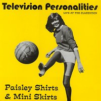
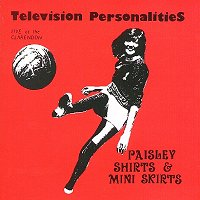

1996 - Overground - OVER52/CD - LP (left) / CD
(right)
Songs:
Anxiety Blocks
Away Day To Brighton
God's Got A Grudge On Me
"Hello Edward"
I Don't Know What To Say
I Remember Bridget Riley
It Had To Happen
Girl On A Motorcycle
La Grande Illusion
Magic Playground
Part-Time Punks
I Know Where Syd Barret Lives
Red And Purple Flashes
Live at the Hammersmith Clarendon on the 22 May 1980. First ever gig!
Design: Alison Wonderland - Peter Pavement
Television Personalities. Dan Treacy continues the story.
"Having recovered from my first unexpected ‘Psychedelic Experience’
I was greatly looking forward to our first proper public performance. It
was to be upstairs at the Clarendon Hotel in Hammersmith, London. We were
invited as special guests of This Heat and Essential Logic. As we were first
band on we decided to make the most of our chance and so we organized an
elaborate film and lights show. We had two huge screens erected at either
side of the hall and we projected a collage of oil wheels and ‘Arty’
slides along with films of the Royal Family and The Supremes amongst others.
We would often rummage through the dustbins in Dean St in London where all
the film studios are. They always throw a lot of discarded film away. Some
of it too shocking to talk about here! Anyway, the gig was a great success
for us. The audience were just a little bit ‘Bizzare!’ I had not
seen a genuine hippie since I was a child in the sixties. Well, here in the
hall were 400 of them, all sitting cross legged on the floor! We came on
dressed in the most outrageous ‘Mod Pop Art’ clothes! All R.A.F.
flying jackets and cravats and they thought we were weird!? Everyone told
us we were ‘SUPER’…. and of course we were!"
|